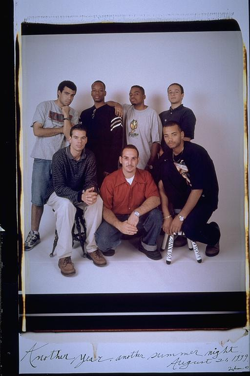

Pals: Boys Who Grew Up Together
elsadorfman.com/pals
Casey: This picture shows how strong the bonds of friendship are. How else could two kids from Roxbury, three kids from Cambridge and a kid from Beacon Hill wind up in the same room? Malcolm and Carlos are two of my favorite people -- every time I see them I am guaranteed a good time. Originally Eugene's friends, Malcolm and Carlos started hanging out with the rest of the gang and fit in like we were all childhood friends. To this day we all have personal jokes together and even all went to IHOP together for Malcolm's bachelor party.
Aldo: All these guys together, what a crew. We would often all go out to the movies. Or play laser tag, a personal favorite of Eugene, who always won. And whenever we went out to the movies, or a restaurant, we were all noisy and obnoxious enough to make people move, or at least experience the movie or meal in discomfort.

elsad@comcast.net